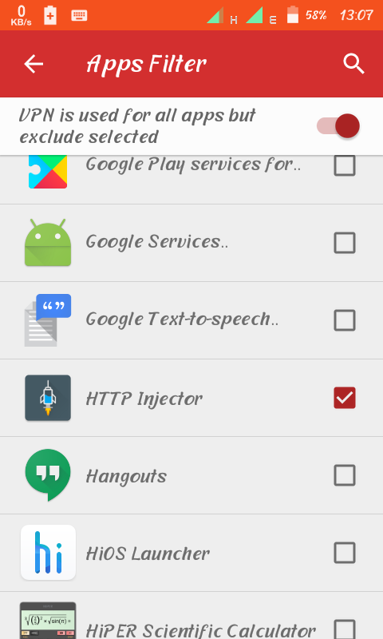

After successful download and installation..open app..
Create your free account and login...Make sure you have an active data bundle to login..
STEP 3
After logging in..go to settings and tap on "apps filter" then put a tick on http-injector as shown below..

This means that you should be having an http injector apk already installed on your device..
After enabling it...go to home in finch vpn and select...
Protocal = TCP
Port = 443
Server = choose 1 or 2
STEP 4
Before connecting...turn on data connection and go to http injector apk and import a config that I specifically made for listening to incoming net connection....
STEP 5
Tap the link below to download the http injector file...
Import it to http-injector...then press "start"....After, leave the session running then go connect your finch vpn..